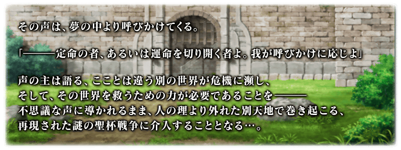
◆活動舉辦期間◆
2018年4月29日(日) 19:00～5月13日(日) 11:59
◆活動概要◆
舉辦期間限定Fate/Apocrypha×Fate/Grand Order特別活動「Apocrypha/Inheritance of Glory」！
來自夢的引導，發生於不是夢的世界，在再現的聖杯大戰勝利吧！
本活動進行主線關卡的話，會發生敵陣營Servant接連複數登場的撃退戰。
撃退戰自4月29日(日) 19:00開始至5月6日(日)的期間，分成5階段發生。
與所有的Master合力將敵陣營Servant撃退，把主線關卡推進至最後，得到活動限定Servant「★4(SR)齊格」吧！
◆活動參加條件◆
只限通過「第一特異點 邪龍百年戰爭 奧爾良」的Master才能參加
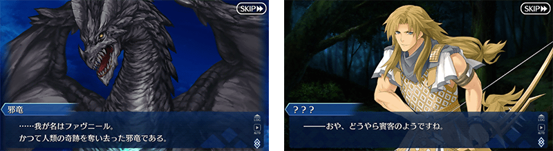
在Fate/Grand Order官方網站內首頁及Gallery，公開了期間限定Fate/Apocrypha×Fate/Grand Order特別活動「Apocrypha/Inheritance of Glory」的TVCM。敬請確認。
動畫製作：A-1 Pictures
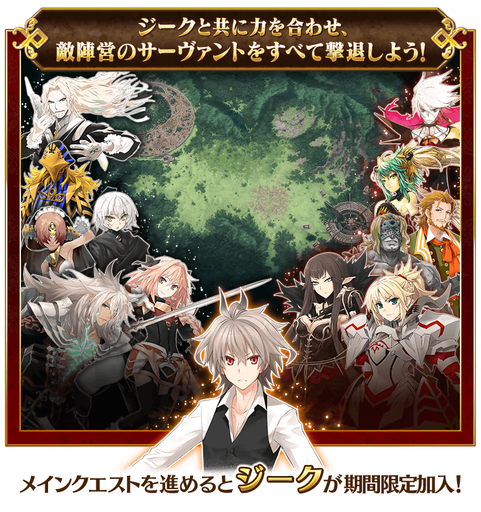
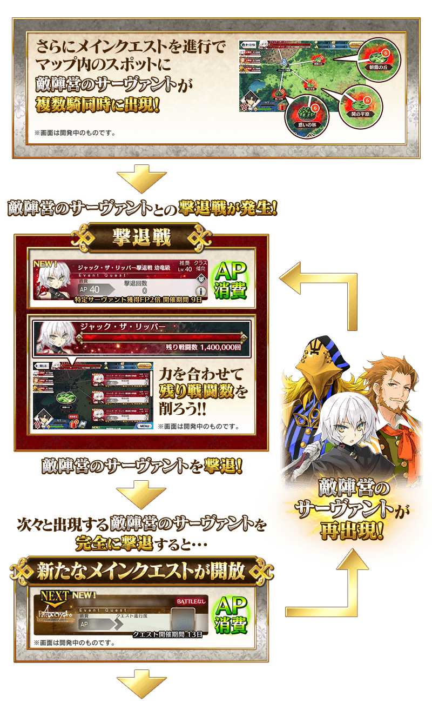
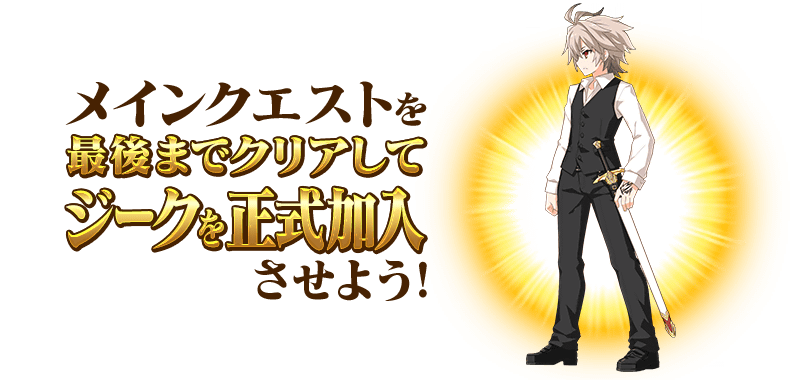
◆敵陣營Servant登場一覧◆
介紹在撃退戰出現的敵陣營Servant。
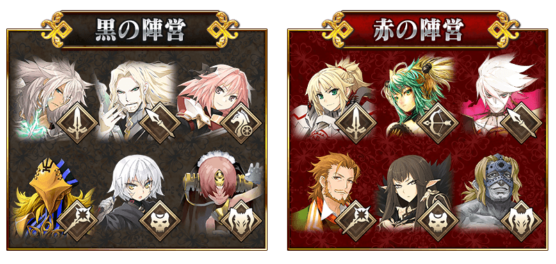
◆撃退戰時間表◆
敵陣營Servant同時複數出現的撃退戰自4月29日(日) 19:00開始至5月6日(日)為止的期間全部發生5階段。
請注意第5階段的撃退戰結束後不會發生撃退戰。
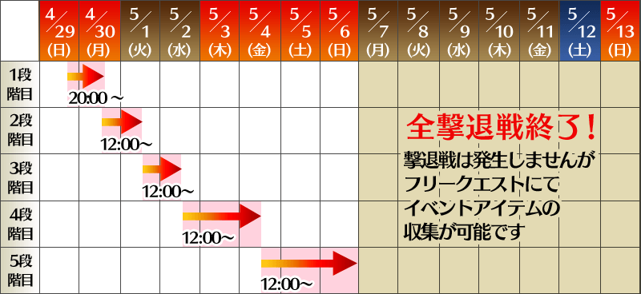
※撃退戰是靠Master全員削減敵陣營的「剩餘戰鬥數」的戰鬥。
※在戰鬥勝利1次的話「剩餘戰鬥數」減少1。(不管在哪個級的情況都是減少1)
※「剩餘戰鬥數」變成0的話，撃退戰結束，發生下個撃退戰後該撃退戰就無法再參戰。
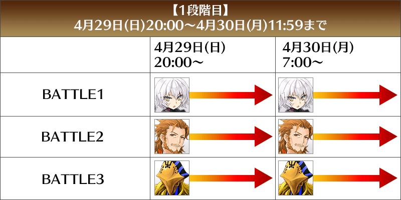
【4月30日(一) 12:00更新】

【5月1日(二) 12:00更新】
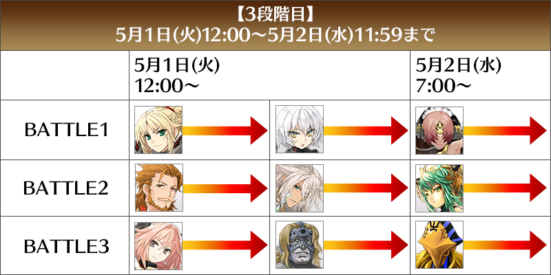
【5月2日(三) 12:00更新】
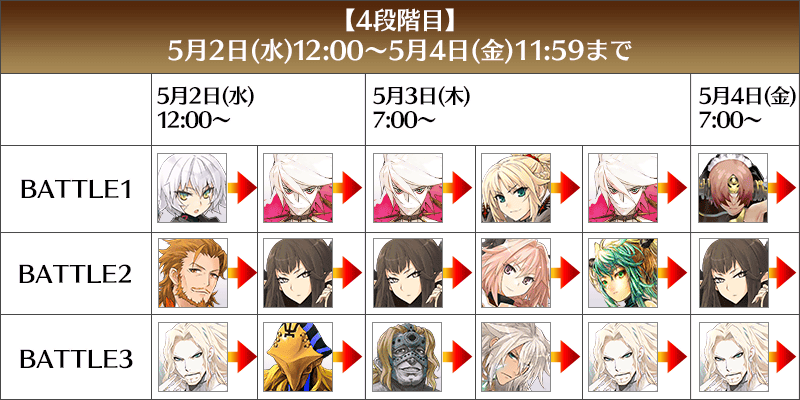
【5月4日(五) 12:00更新】

◆自由關卡◆
通過主線關卡第1節的話，會開放可收集活動専用道具的自由關卡地點。
之後的自由關卡，依通過主線關卡來開放地點。
絶級及天級是藉由撃退戰的進行追加在後半出現的地點。
| 自由關卡 |
|---|
| 中級 |
| 上級 |
| 超級 |
| 絶級 |
| 天級 |
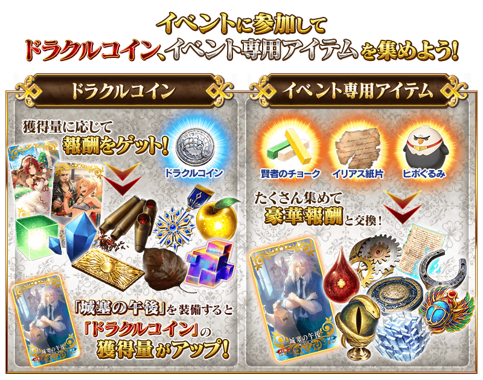
「龍公硬幣」可靠通過撃退戰和自由關卡做為報酬入手。
「龍公硬幣」的獲得量到達一定量的話，可獲得對應獲得量的達成報酬。
達成報酬可於「硬幣獲得報酬」確認。
※「龍公硬幣」的獲得量是計算在活動關卡掉落獲得的「龍公硬幣」。
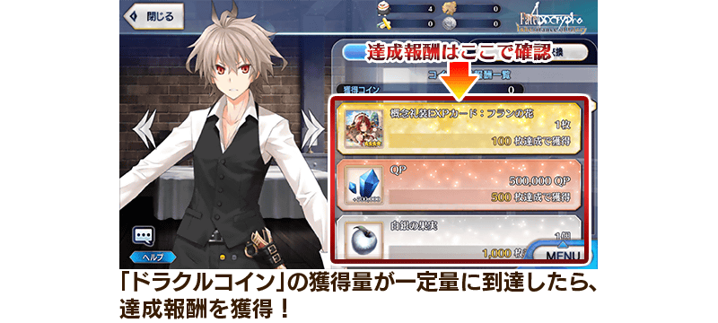
◆超值攻略方法・其1◆
對象Servant在期間限定活動「Apocrypha/Inheritance of Glory」的活動關卡中，會提升自身的攻擊的威力！
強化對象Servant，挑戰活動吧！
※各Servant增加量有所差異。
【黑之陣營對象Servant】
| 職階 | 稀有度 | Servant名 |
|---|---|---|
| Saber | ★★★★ | 齊格飛 |
| Archer | ★★★★ | 凱隆 |
| Rider | ★★★★ | 阿斯托爾福 |
| Caster | ★★★ | 阿維斯布隆 |
| Assassin | ★★★★★ | 開膛手傑克 |
| Berserker | ★★★★★ | 弗拉德三世 |
| ★★★★ | 弗蘭肯斯坦 |
【赤之陣營對象Servant】
| 職階 | 稀有度 | Servant名 |
|---|---|---|
| Saber | ★★★★★ | 莫德雷德 |
| Archer | ★★★★ | 阿塔蘭塔 |
| Lancer | ★★★★★ | 迦爾納 |
| Rider | ★★★★★ | 阿基里斯 |
| Caster | ★★ | 威廉・莎士比亞 |
| Assassin | ★★★★★ | 賽米拉米斯 |
| Berserker | ★★★★ | 阿塔蘭塔〔Alter〕 |
| ★ | 斯巴達克斯 |
【其他對象Servant】

| 職階 | 稀有度 | Servant名 |
|---|---|---|
| Archer | ★★★ | 大衛 |
| Lancer | ★★ | 武藏坊弁慶 |
| Rider | ★★ | 聖喬治 |
| Caster | ★★★★ | 齊格 |
| Berserker | ★★★★★ | 坂田金時 |
| Ruler | ★★★★★ | 天草四郎 |
| ★★★★★ | 貞德 |
◆超值攻略方法・其2◆
裝備可靠「龍公硬幣」獲得報酬入手的活動限定概念禮裝「トゥリファスにて」的話，在期間限定活動「Apocrypha/Inheritance of Glory」活動關卡中會提升自身的攻擊威力。
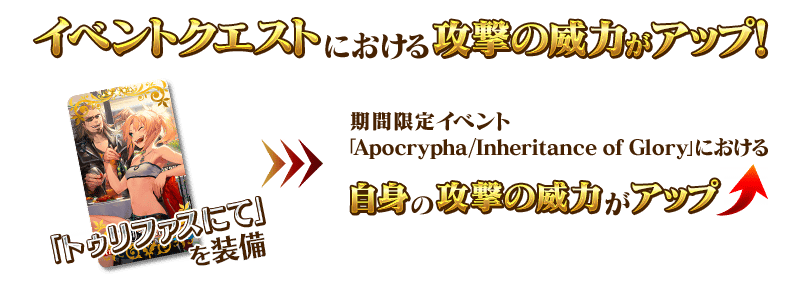
◆超值攻略方法・其3◆
裝備可靠活動道具交換入手的活動限定概念禮裝「城塞の午後」的話，在期間限定活動「Apocrypha/Inheritance of Glory」活動關卡中會提升「龍公硬幣」的獲得量。
※請注意各關卡的道具掉落率並非100％。
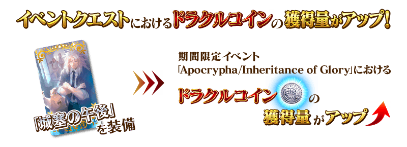
◆超值攻略方法・其4◆
裝備在聖晶石召喚Pick Up的期間限定概念禮裝「彼方への巡礼」「刹那のまほろば」「出発進行！」的話，在期間限定活動「Apocrypha/Inheritance of Glory」中會提升活動専用道具「賢者粉筆」「伊利亞德紙片」「駿鷹娃娃」的掉落獲得數。
※請注意各關卡的道具掉落率並非100％。
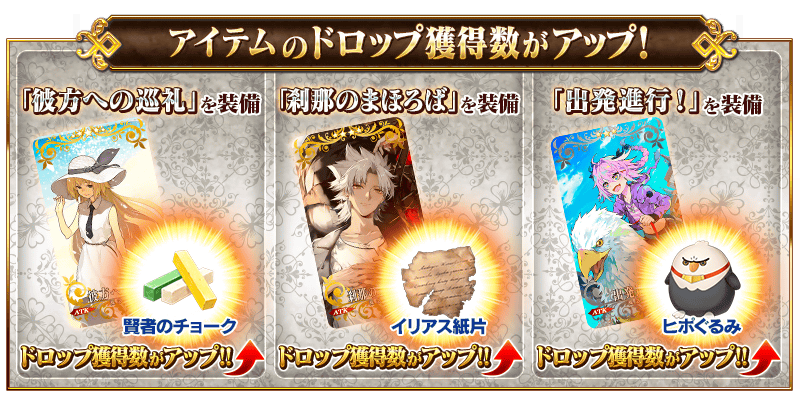
| 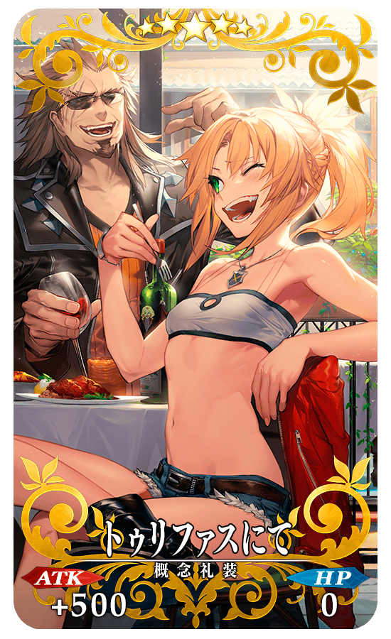 |
★★★★★SSR |
| 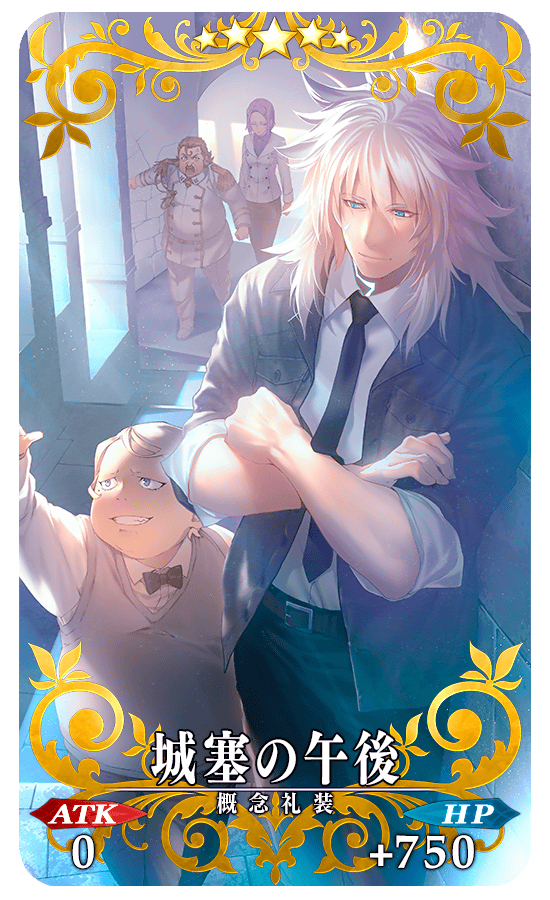 |
★★★★★SSR |
◆靈基再臨◆
使用活動期間中靠「龍公硬幣」獲得報酬外無法入手的「無法忘懷之葉(忘れじの葉)」，重複4次靈基再臨的話，卡面會有所變化！
※齊格不會隨靈基再臨使戰鬥角色的外觀變化。
◆得到活動限定概念禮裝經驗值卡「フランの花」吧！◆
做為「龍公硬幣」的獲得報酬，可大幅度強化概念禮裝的EXP卡登場！ |
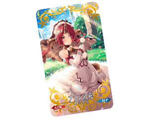 |
介紹齊格的寶具演出！
在「Fate/Grand Order」官方網站內的公告中，公開了「★4(SR)齊格」的寶具演出。敬請確認。
◆交換方法◆
交換期限:2018年4月29日(日) 20:00～5月20日(日) 11:59
※交換期間結束後「賢者粉筆」「伊利亞德紙片」「駿鷹娃娃」會消失。
活動専用道具可自點擊管理室(ターミナル)畫面右上「活動報酬」的「活動道具交換」畫面，交換以下的道具。
◆能用賢者粉筆(賢者のチョーク)交換的道具◆
| 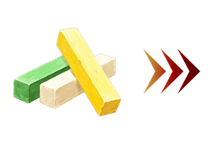 |
【活動限定Servant】
【活動限定概念禮裝】 【技能強化＆靈基再臨素材】 【技能強化素材】 【其他道具】 |
◆能用伊利亞德紙片(イリアス紙片)交換的道具◆
|
【活動限定Servant】
【活動限定概念禮裝】 【技能強化＆靈基再臨素材】 【技能強化素材】 【其他道具】 |
◆能用駿鷹娃娃(ヒポぐるみ)交換的道具◆
|
【活動限定Servant】
【活動限定概念禮裝】 【技能強化＆靈基再臨素材】 【技能強化素材】 【其他道具】 |
【5月4日(五) 12:00追記】
以通過期間限定活動「Apocrypha/Inheritance of Glory」主線關卡及「終局特異點」的Master做為對象開放高難易度「挑戰關卡」。
「挑戰關卡」就算通過後也不會消失，能無數次挑戰，可以變更Servant和概念禮裝的組合後再次挑戰。
※關卡通過報酬、戰利品、Master經驗值、魔術禮裝經驗值、絆點數只可在初次通過時獲得。
◆挑戰關卡出現條件◆
・撃退戰第5階段結束後～5月13日(日) 11:59
・通過期間限定活動「Apocrypha/Inheritance of Glory」的主線關卡
◆挑戰關卡參加條件◆
只限通過期間限定活動「Apocrypha/Inheritance of Glory」的主線關卡及「終局特異點」的Master才能參加
◆挑戰關卡初次通過報酬◆
傳承結晶 1個
初登場Servant「阿基里斯」和「凱隆」做為Pick Up對象的期間限定「Fate/Apocrypha×Fate/Grand Order特別活動Pick Up召喚」的詳情請至下述橫幅確認。